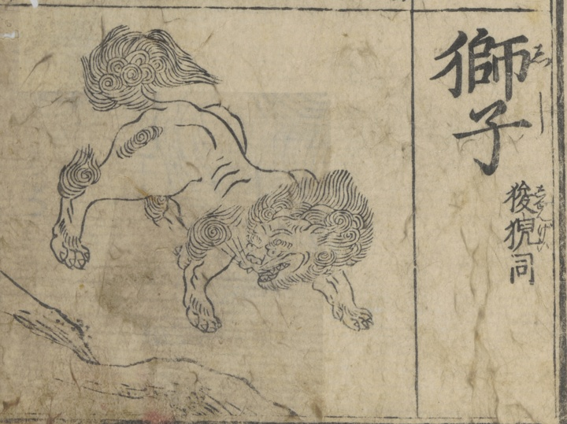

← 图鉴索引

狻猊ともいう。
著作者：中村惕齋／出典：親書誌：U426_nichibunken_0468：訓蒙圖彙；キンモウズイ／日付：2025／資源識別子：U426_nichibunken_0468_0003_0003
Copyright (c)2010- International Research Center for Japanese Studies, Kyoto, Japan. All rights reserved.